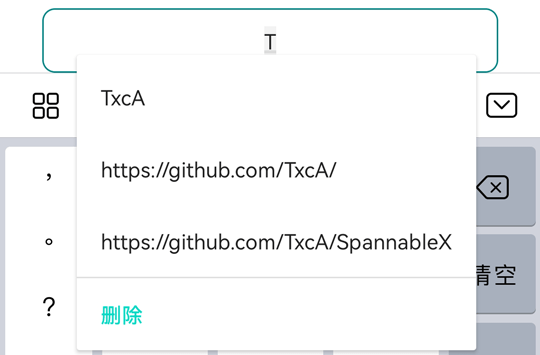
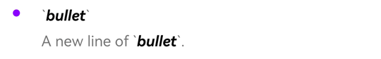
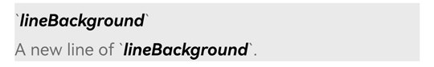

常用Span
为了方便使用，SpannableX 里二次封装了系统的常用Span。
这些方法在 Kotlin DSL 及 Kotlin\Java 链式 调用里，使用了同样的方法名及参数。
常用Span示例¶
TextView.text = spannable {
"bold red text.".span {
// 参见下方`完整Span说明`的style方法
style(Typeface.BOLD)
// 参见下方`完整Span说明`的color方法
color(Color.RED)
}
}
完整Span说明¶
所有的CharacterStyle方法，都带有 replaceRule 替换规则参数，对于替换规则详解，请查看 替换规则 说明。
对于内置的ParagraphStyle，由于是对段落进行操作，都不支持replaceRule 替换规则参数。
这里只列出方法名及效果说明，详细参数说明可查看 API文档 或查看 Sample 。
| 方法 | 效果说明 | 对应Span | 效果示例 |
|---|---|---|---|
| style() | 设置文本样式 | StyleSpan | |
| typeface() | 设置字体样式 | TypefaceSpan | |
| textAppearance() | 设置字体效果 | TextAppearanceSpan | |
| color() | 文本颜色 | ForegroundColorSpan | |
| background() | 背景颜色 | BackgroundColorSpan | |
| image() | 图片 | CenterImageSpan | |
| glide() | Glide加载图片 | GlideImageSpan | |
| scaleX() | X轴文本缩放 | ScaleXSpan | |
| maskFilter() | 文本蒙版效果 | MaskFilterSpan | |
| blurMask() | 文本模糊滤镜蒙版效果 | BlurMaskFilter | |
| superscript() | 文本上标 | SuperscriptSpan | |
| subscript() | 文本下标 | SubscriptSpan | |
| absoluteSize() | 文本绝对大小 | AbsoluteSizeSpan | |
| relativeSize() | 文本相对大小 | RelativeSizeSpan | |
| strikethrough() | 删除线 | StrikethroughSpan | |
| underline() | 下划线 | UnderlineSpan | |
| url() | 超链接 | URLSpan | |
| suggestion() | 文本输入提示 | SuggestionSpan |  |
| clickable() | 可点击文本 | SimpleClickableSpan | |
| margin() | 文本间距 | MarginSpan | |
| quote() | 段落引用样式(段落前竖线标识) | QuoteSpan LegacyQuoteSpan |
|
| bullet() | 段落项目符号(段落前圆形标识) | BulletSpan LegacyBulletSpan |
 |
| alignment() | 段落对齐方式 | AlignmentSpan.Standard | |
| lineBackground() | 段落背景颜色 | LineBackgroundSpan.Standard LegacyLineBackgroundSpan |
 |
| leadingMargin() | 段落文本缩进 | LeadingMarginSpan | |
| lineHeight() | 段落行高 | LineHeightSpan.Standard LegacyLineHeightSpan |
|
| imageParagraph() | 段落图片 | ParagraphBitmapSpan ParagraphDrawableSpan |
使用自定义Span¶
对于未内置的Span或自定义的Span，可以使用custom方法快速集成及使用CharacterStyle&ParagraphStyle.
-
kotlin
-
java
其它说明¶
👉 本地、网络、Gif图片加载: 图片加载
👉 替换规则(DSL、链式通用): 替换规则